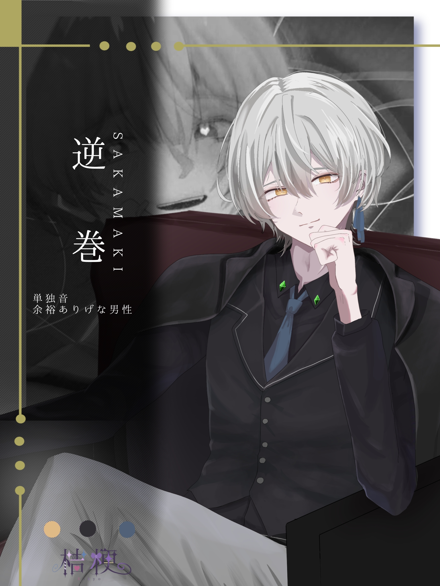

参考動画
逆巻
Sakamaki
逆巻は、桔梗が制作するUTAU音源のオリジナルキャラクター。 穏やかでキザな男性。鈴音と愛生の営む花占い屋を支えている。
Sakamaki
逆巻は、桔梗が制作するUTAU音源のオリジナルキャラクター。 穏やかでキザな男性。鈴音と愛生の営む花占い屋を支えている。

立ち絵を5回クリックすると...?
「はじめまして。私達に依頼...じゃない、占ってほしいことがあるのかな？」
「少し退屈じゃない？私と一緒にどこかへ遊びに行こうよ。他の子には内緒でね。」
「歌....?なんだか、「好き」って言わないといけない圧を感じるね。でも、私はそんな圧に屈しないよ。別に、得意でもなければ好きでもないかな。キミに歌い方を教えてもらえれば好きになれるかもね？」
普段は何をしているのかよくわからない謎の人物。占い屋を営む鈴音と愛生に依頼を解決してもらったことをきっかけに支援者となる。なぜか二人に丸め込まれて経営を手伝わされている。店長。誰にでも優しく、温厚な性格。
単独音単音階
「あれ、珍しい。こんなところに人間がいるなんて。迷い込んできたの？可哀そうだね。私が飼ってやろうか？ちょうど人を飼ってみたいと思っていたんだ。」
「美味しそうだし、食べちゃってもいいかな？...冗談だよ。まだ食べないよ。」
「私に歌を歌えと命令しているの？何言ってるんだ、お前。今すぐに喰い殺されたいのか？」
鬼だった世界戦の逆巻。常に飲酒しているので酒臭い。悠々自適に鬼生を楽しんでいる傲慢で自由な男。人間を愛玩動物として可愛がっているが、逆らってきた奴は食べちゃう怖い鬼。雷を操れる。
この先には、年齢制限のある裏設定が含まれる可能性があります。
この先の内容は、18歳未満の方には適さない表現を含む可能性があります。
あなたは18歳以上ですか？
傲慢で我儘な自我と異常な支配欲を理性と道徳心でギリギリ押さえつけて物腰穏やかを装っているだけの男。無自覚の愛着障害を抱えている。どれだけ愛されても満たされないので、不特定多数と親しい繋がりを求める。逆巻は多くの人と繋がりを持とうとするが、相手には自分が一番であって欲しいと願う自己中心的な性格。気に入った相手には大変優しい。しかし、相手に拒絶的な態度を取られると密やかと不安になり、束縛が激しくなる。地の果てまで追い回す。彼に優しくされたということは、既にターゲットとしてロックオンされたことの裏返しだ。容姿や立場などで相手を選ぶことなく無条件でロックオンするため、「だれにでも優しい人」と評されるだけ。
食器と金属製のカトラリーが擦れる音が苦手だ。逆巻は、日本生まれ海外育ちの裕福な家系出身で、幼少期からマナーを躾けられてきた。音を立てると、父に怒られたことを思い出し、気分が悪くなる。相手がだれであろうと、上から目線で物を言われることが不愉快だ。また、騒音は自分以外から発するものであり、制御できないという部分も気に食わない。
逆巻の性的嗜好は老若男女を問わない。また、相手からの愛を強く感じられるからという理由で、性行為を好む。一度、相手の申し出から受けをやろうとしたが、いざ覆い被された時に物凄く不快になったため、押し退けて形勢逆転をしたくらいには攻めを好む。主導権を握られることを嫌う、生粋の支配欲。プライドも高い。
逆巻の配布日は2026/06/19です。いつ配布しようかな～と考えていたところ、たまたま6/19が太宰治の誕生日兼命日だったため、この日に合わせたいと思いました。世界を俯瞰してるように見えて、物凄く人間らしい汚い性質を持っているのが良いなぁ～と思ったため、少しそこに重ねてみています。
「さかまき」と名前を付けた理由は、SとMを入れたかったからです。前からいた自音源が「すずね」と「めう」だったので、そこの2人のイニシャルから来ています。だから、坂本とかになっていた可能性もあります。性格などは本当に後付けなのですが、穏やかな表層の下に逆巻くような恐ろしい自我があるというのを示唆しているようで私は気に入っています。下の名前は「来（くる）」です。これに関しては、「逆巻来」という字面の面白さで決めました。ただ、発音したときの響きがあまりにも可愛い感じなので本人はあまり名乗りたがりません